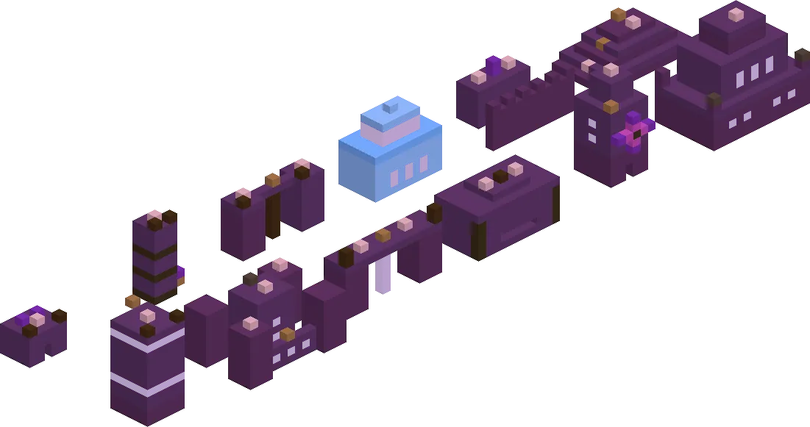
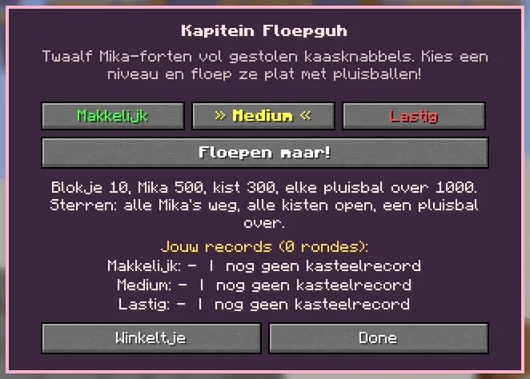
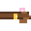

Fire fluff balls at twelve Mika forts with Captain Floepguh.
Schiet pluisballen op twaalf Mika-forten met Kapitein Floepguh.

Twelve Mika fortsTwaalf Mika-forten
A round is twelve hand-made forts, one after the other, each built up layer by layer on the ledge: the Mikahutje, the Wiebeltoren, Twee Torentjes, the IJspaleisje, the Stenen Muur, the Mikapiramide, the Wolkenkrabber, the Mika-kasteeltje, the Hangbrug, the Knabbelpakhuis, the Mikamolen and the Grote Mikaburcht. Wood, stone, glass, ice and wool. Stand in the bucket, aim and shoot pluisballen: the ball flies in a real arc and knocks blocks out, and whatever loses its support tumbles down (a heavy piece knocks more over). The Mikas never get hurt: they run off giggling. Crates with stolen knabbels burst open, and you get those knabbels for real.
Een ronde is twaalf handgemaakte forten achter elkaar, elk laag voor laag opgebouwd op de richel: het Mikahutje, de Wiebeltoren, Twee Torentjes, het IJspaleisje, de Stenen Muur, de Mikapiramide, de Wolkenkrabber, het Mika-kasteeltje, de Hangbrug, het Knabbelpakhuis, de Mikamolen en de Grote Mikaburcht. Hout, steen, glas, ijs en wol. Ga in het bakje staan, mik en schiet pluisballen: de bal vliegt in een echte boog en slaat blokjes eruit, en wat geen steun meer heeft tuimelt naar beneden (een zwaar stuk gooit nog meer om). De Mika's krijgen nooit pijn: ze rennen giechelend weg. Kisten met gestolen knabbels springen open, en die knabbels krijg je echt.
| LevelNiveau | Pluisballen per fortPluisballen per fort | ExtraExtra |
|---|---|---|
| MakkelijkMakkelijk | 5 | an aiming lineeen mikstreep |
| MediumMedium | 4 | |
| LastigLastig | 3 | wind (arrows in the action bar)wind (pijltjes in de actiebalk) |
Stars per fort: all Mikas gone, all crates open, and a pluisbal left over (36 in a round). Points: a block 10, a Mika 500, a crate 300, a pluisbal left over 1000.
Sterren per fort: alle Mika's weg, alle kisten open, en een pluisbal over (36 in een ronde). Punten: een blokje 10, een Mika 500, een kist 300, een pluisbal over 1000.

Kapitein Floepguh
Pick a level (the chosen one is framed: » Medium «) and press Floepen maar!. Katapultsterren: 1 per round, +1 per 9 stars, +1 for a record; lastig +50%.
Kies een niveau (het gekozen niveau staat tussen haakjes: » Medium «) en druk op Floepen maar!. Katapultsterren: 1 per ronde, +1 per 9 sterren, +1 voor een record; lastig +50%.
Prizes: clothesPrijzen: kleding
 Katapulthelmpje 4 katapultsterren
Katapulthelmpje 4 katapultsterren
Katapultriem 10 katapultsterren Pluisbal-oorbelletjes 6 katapultsterren
Pluisbal-oorbelletjes 6 katapultsterren
Highscores in the GuhdexHighscores in de Guhdex
- Makkelijk
- Medium
- Lastig
See alsoZie ook
 De KnabbelkatapultStructuresBouwwerken
De KnabbelkatapultStructuresBouwwerken Kapitein FloepguhCharactersPersonages
Kapitein FloepguhCharactersPersonages Clothing set: De KnabbelkatapultKledingset: De KnabbelkatapultClothesKleding
Clothing set: De KnabbelkatapultKledingset: De KnabbelkatapultClothesKleding